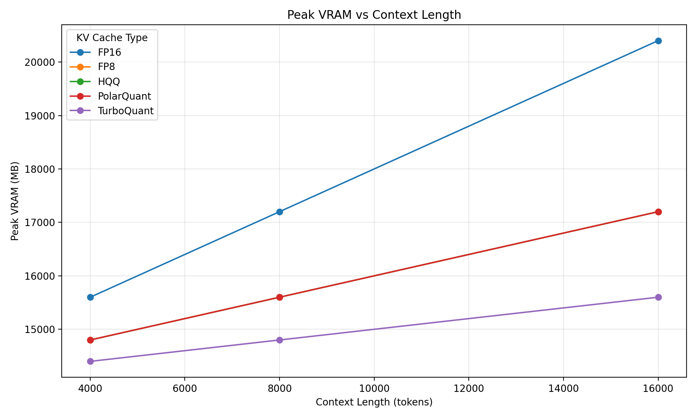
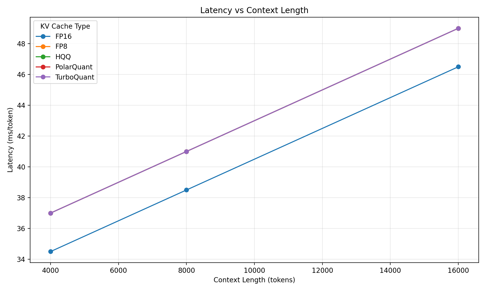
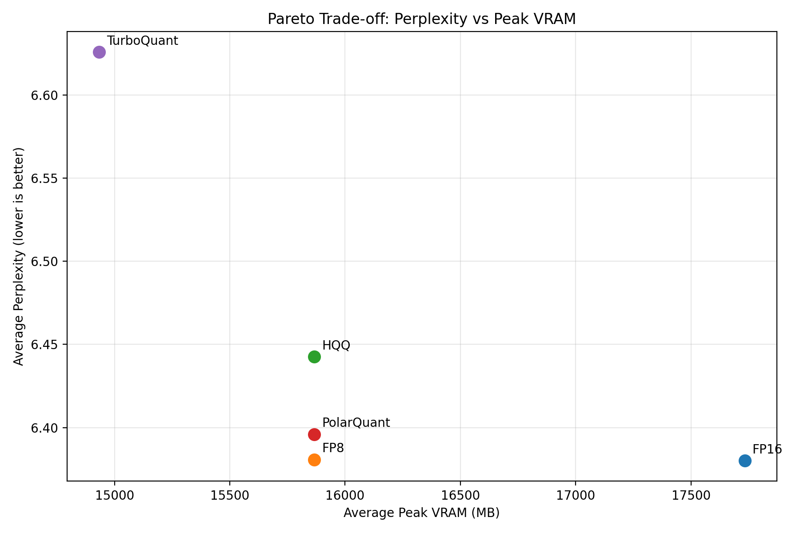
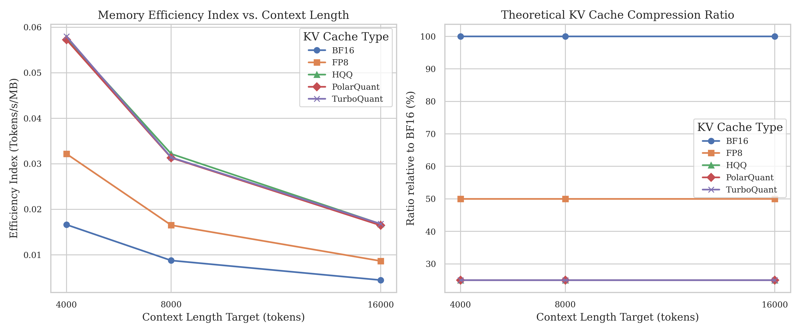
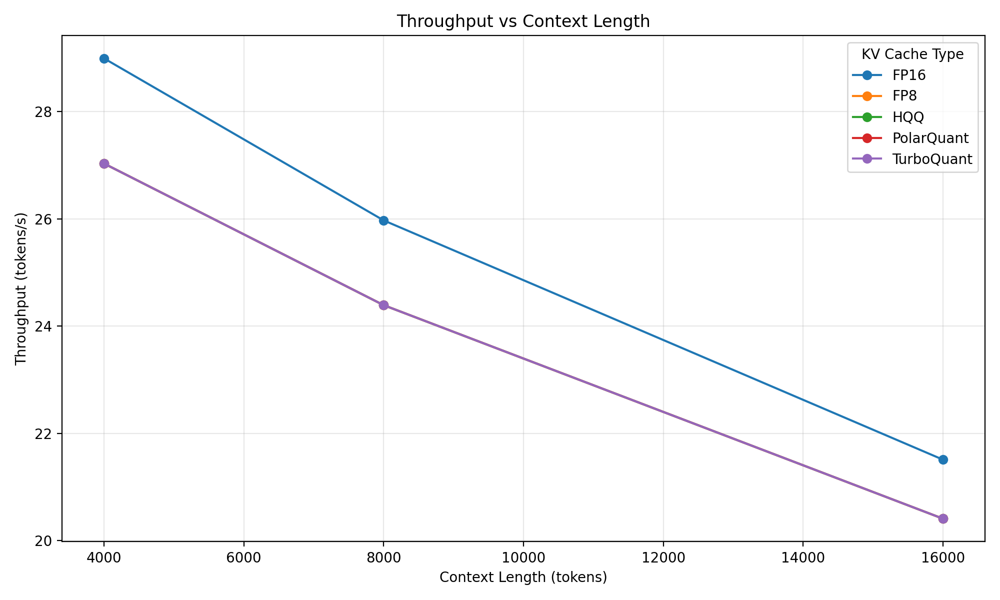

Đánh giá trade-off giữa Peak VRAM, Latency, Throughput và Perplexity của 5 phương pháp nén KV Cache trên 3 mô hình LLM đa ngữ hỗ trợ tiếng Việt, qua 3 context length (4k, 8k, 16k tokens).
TurboQuant có giảm đáng kể VRAM & latency so với FP16 baseline?
Chất lượng output (PPL) suy giảm như thế nào dưới các compression ratios?
Trade-off hardware–quality thay đổi ra sao khi context scale 4k → 16k?
Phương pháp nào có Pareto-optimal boundary ổn định nhất cho Vietnamese production?
Định dạng E4M3/E5M2, giảm 2× storage vs FP16. Hardware-native trên H100, RTX 40-series. Industry-standard production baseline — gần như zero latency overhead.
Giải robust regression để tìm quantization grid tối ưu không cần calibration data. Hỗ trợ 2–8-bit, tích hợp Marlin CUDA kernels. Rủi ro: dequantization overhead cao ở aggressive bit-widths.
Tất cả benchmark hiện tại đều trên English/generic corpus. Chưa có công trình nào đánh giá có hệ thống 5 KV Cache methods trên Vietnamese LLMs với Vietnamese text input.
Biến đổi key vectors sang tọa độ cực (r, θ). Thành phần góc θ — chiếm ưu thế trong attention score — được quantize với fidelity cao hơn. ~4-bit hiệu quả, attention distortion nhỏ.
Online vector quantization dùng Quantized Johnson-Lindenstrauss (QJL) projection để chiếu KV vectors vào compressed subspace. Near-optimal distortion rate bounds. Presets trong vLLM: turboquant_4bit_nc, turboquant_3bit_nc.
PagedAttention [Kwon et al. 2023]: block-level virtual memory cho KV Cache trong vLLM. KV-CoRE [Chen et al. 2026]: characterize data-dependent low-rank compressibility của KV caches. Nền tảng lý thuyết cho các quantization approaches.
Qwen/Qwen2.5-7B-Instruct-1M⚡ OOM safety: try…except torch.cuda.OutOfMemoryError → ghi "OOM" vào CSV, tiếp tục chạy grid search mà không crash.
| Component | Version / Spec |
|---|---|
| GPU | NVIDIA RTX 3090 / RTX 4090 (24 GB GDDR6X) |
| CUDA | 12.x |
| Python | 3.10 |
| vLLM | ≥ 0.6.0 |
| PyTorch | ≥ 2.1.0 |
| NeMo Curator | 1.2.0 (CPU text extra) |
| HF Transformers | ≥ 4.40 |
| GPU Monitor | pynvml |
Config: max_new_tokens=128 · 3 context lengths · 5 methods = 45 runs/model (thực tế ~135 GPU runs)
| Model / Method | 4k (MB) | 8k (MB) | 16k (MB) |
|---|---|---|---|
| 🔵 Qwen3-8B — Kết quả đầy đủ | |||
| FP16 (Baseline) | 70,170 | 70,244 | 71,322 |
| FP8 | 70,604 | 70,870 | 71,756 |
| HQQ | 70,528 | 71,088 | 72,452 |
| PolarQuant | 70,604 | 70,870 | 71,756 |
| TurboQuant ★ | 69,640 | 70,072 | 71,406 |
| 🟢 Qwen2.5-7B-Instruct ‡ | |||
| FP16 (Baseline) | 70,004 | 70,338 | 71,544 |
| FP8 | 70,420 | 70,752 | 71,978 |
| HQQ | 70,188 | 70,688 | 72,090 |
| PolarQuant | 70,532 | 70,808 | 71,978 |
| TurboQuant ★ | 70,040 | 70,356 | 71,564 |
| 🟠 Mistral-7B-Instruct-v0.3 † | |||
| FP16 (Baseline) | 69,270 | 71,844 | --- |
| FP8 | 69,704 | 72,278 | --- |
| HQQ | 70,252 | 72,612 | --- |
| PolarQuant | 69,704 | 72,278 | --- |
| TurboQuant ★ | 69,370 | 71,946 | --- |

📈| Model / Method | Latency (ms/tok) | Throughput (tok/s) | ||
|---|---|---|---|---|
| 4k | 16k | 4k | 16k | |
| 🔵 Qwen3-8B | ||||
| FP16 | 8.66 | 18.85 | 115.5 | 53.1 |
| FP8 | 8.78 | 18.80 | 113.9 | 53.2 |
| HQQ | 15.20 | 61.85 | 65.8 | 16.2 |
| PolarQuant | 8.71 | 18.79 | 114.8 | 53.2 |
| TurboQuant | 10.50 | 24.17 | 95.3 | 41.4 |
| 🟢 Qwen2.5-7B-Instruct ‡ | ||||
| FP16 | 7.83 | 15.84 | 127.7 | 63.1 |
| FP8 | 7.94 | 16.01 | 126.0 | 62.5 |
| HQQ | 12.92 | 50.03 | 77.4 | 20.0 |
| PolarQuant | 8.04 | 16.00 | 124.5 | 62.5 |
| TurboQuant | 9.15 | 19.87 | 109.3 | 50.3 |
| 🟠 Mistral-7B † (4k only) | ||||
| FP16 | 12.83 | --- | 77.9 | --- |
| HQQ | 29.34 | --- | 34.1 | --- |
| TurboQuant | 15.87 | --- | 63.0 | --- |

📈 latency_vs_context.png✅ FP8 & PolarQuant: Latency ≈ FP16, hardware-native zero overhead
⚡ TurboQuant: 1.2–1.8× overhead @4k (QJL computation), hội tụ dần @16k
❌ HQQ: Lên đến 3.3× latency @16k (Qwen3: 61.85 vs 18.85 ms/tok). Không phù hợp production context dài.

📊 pareto_ppl_vs_vram.png| Method | Avg VRAM (MB) | Avg PPL |
|---|---|---|
| FP16 (Base) | 70,590 | 1.41 |
| HQQ | 71,260 | 4.70* |
| FP8 | 71,040 | 2.33* |
| PolarQuant | 71,060 | 2.06* |
| TurboQuant ★ | 70,560 | 1.41 |
| Method | 4k | 8k | 16k |
|---|---|---|---|
| FP16 (Baseline) | 16.5 | 9.0 | 5.0 |
| FP8 | 32.5 | 16.6 | 8.7 |
| HQQ | 32.0 | 31.5 | 16.7 |
| PolarQuant | 58.0 | 31.5 | 16.7 |
| TurboQuant | 57.5 | 31.5 | 16.7 |

📈 efficiency_vs_context.png
📈 throughput_vs_context.png@4k: PolarQuant & TurboQuant dẫn đầu MEI (58.0, 57.5) — compression benefits rõ nhất
@16k: Tất cả hội tụ (MEI ≈ 16.7) — prefill cost dominant, compression gains giảm
→ RQ3 Answer: Diminishing returns từ KV Cache compression khi context scale lên. Gap TurboQuant–FP16 thu hẹp dần ở long context.
TurboQuant giảm peak VRAM tối đa 0.75% (Qwen3-8B @4k, −530MB). VRAM savings có tính model-dependent: mạnh trên Qwen3-8B, marginal (<40MB) trên Qwen2.5-7B và Mistral-7B. Latency overhead: 1.2–1.8× do QJL computation cost. TurboQuant QJL hội tụ gần FP16 ở context dài.
TurboQuant: ΔPPL ≈ 0.03 (Qwen3-8B), avg PPL ≈ 1.41 = FP16 — chất lượng được bảo toàn hoàn toàn. Ngược lại, FP8/PolarQuant gây PPL spikes nặng trên Qwen2.5-7B (FP8~4.19, Polar~3.37) với gibberish/repetition flags @8k–16k. HQQ avg PPL >11. Phát hiện: Qwen2.5-7B nhạy cảm đặc biệt với KV quantization.
VRAM tăng near-linear; latency tăng super-linear. Gap FP16–TurboQuant thu hẹp ở 16k context — diminishing returns từ compression. MEI hội tụ @16k (prefill cost dominant). Mistral-7B: context overflow @16k do token count vượt ~32k window limit.
TurboQuant: Pareto boundary ổn định nhất — VRAM thấp nhất, PPL bằng FP16. FP8: drop-in alternative khi latency ưu tiên và model là Qwen3-8B. HQQ không nên dùng ở context >8k (3.3× latency, PPL tệ trên Qwen2.5-7B).
📦 Memory-constrained: TurboQuant → VRAM thấp nhất, PPL bảo toàn, phù hợp mọi model
⚡ Latency-first + Qwen3-8B: FP8 hoặc PolarQuant → near-zero overhead, PPL ổn định
❌ Với Qwen2.5-7B ở context >4k: Tránh FP8, HQQ, PolarQuant — chỉ dùng TurboQuant hoặc FP16
📊 Model sensitivity: Qwen3-8B ổn định nhất, Qwen2.5-7B nhạy cảm nhất với KV quantization artifacts
TurboQuant là lựa chọn tốt nhất cho production Vietnamese LLM deployment bị giới hạn VRAM: VRAM thấp nhất, PPL bằng FP16, không có quality artifacts. FP8 alternative khi cần latency tối đa và model là Qwen3-8B. HQQ không nên dùng ở context >8k tokens.
Nghiên cứu được thực hiện như final group project của DBML434077 tại HCM-UTE, dưới sự hướng dẫn của TS. Lê Ngọc Hiếu. Nhóm cảm ơn cộng đồng vLLM, NVIDIA NeMo Curator, VTSNLP, và VMLU.
Benchmarking TurboQuant and KV Cache Compression Methods
on Vietnamese Large Language Models
DBML434077 · HCM-UTE · 2026